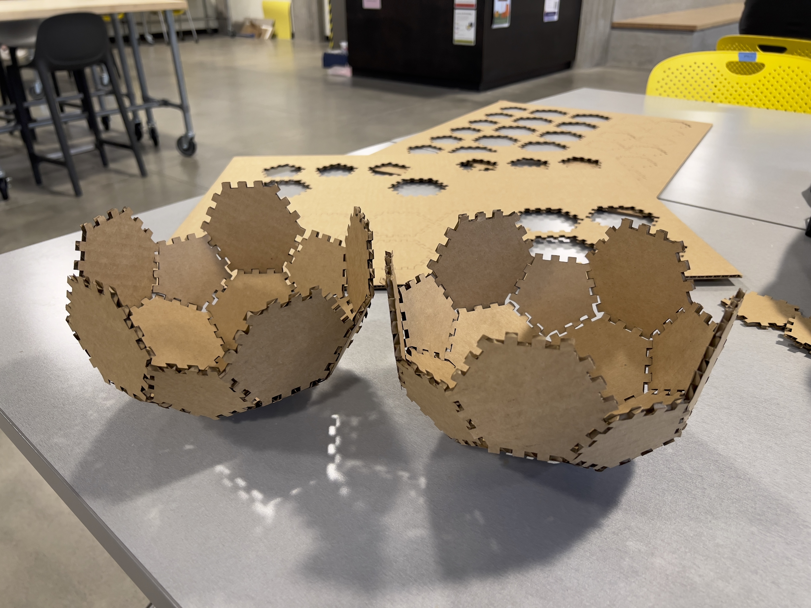
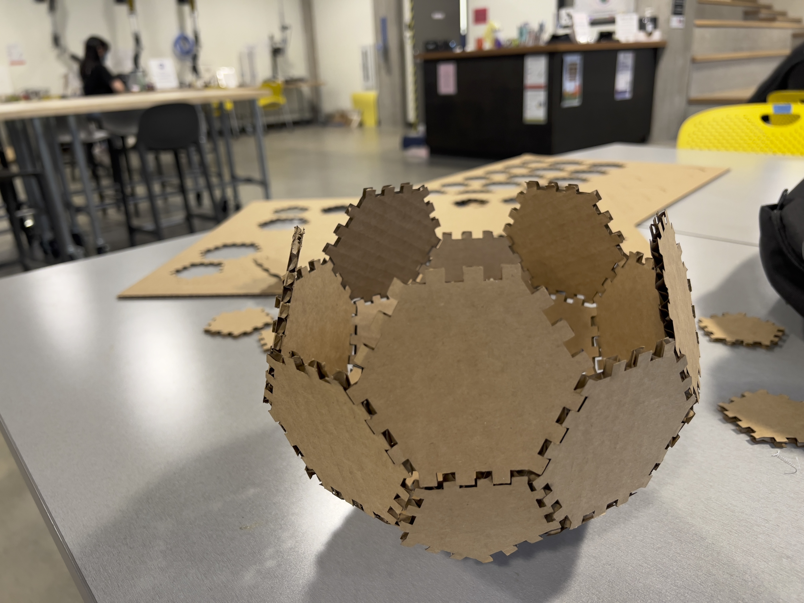
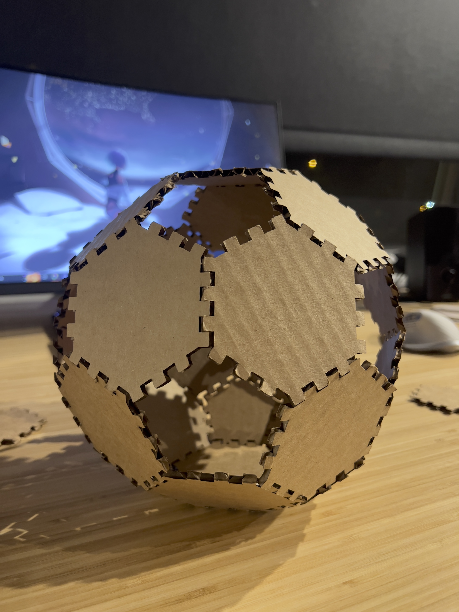
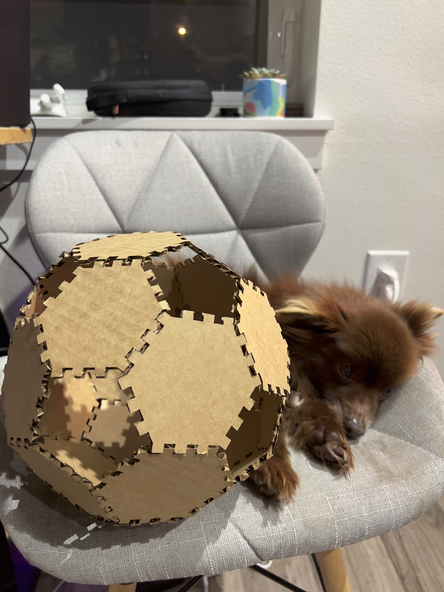

← Back to Clark's Digital Fabrication Portfolio
A1: Laser Cut Press Fit Construction Kit
Last updated: Sat, Oct 15, 2022
For this assignment, I wanted to construct a kit that formed curves using pentagons and hexagons.
I laser cut cardboard shapes that were measured and modeled in 3D using Rhino.
---
I. Fabricating the idea in Rhino (☉_☉) (my first time 3d modeling)
The idea I had was inspired by a soccer ball which consists of 12 pentagons and 20 hexagons pieced together.
A challenge with this concept was that it stretched the definition of "press fit" since the pieces would be pressed
together at an angle and not exactly at snug fits (but still secure enough not to fall apart when shaken).
To help ensure the physical construction doesn't fall apart, I created multiple insert slots on each side of every shape.
The result would be a 3D puzzle of pentagons and hexagons.
---
II. Creating laser cutting batches in Illustrator (-‿◦)
I exported the shapes I modeled in Rhino into .ai files and created a batch for laser cutting that included
7 pentagons and 12 hexagons each on a 24inx18in board. Each outline had a 0.01 stroke for laser cutting.

---
III. Putting it altogether ٩(◕‿◕｡)۶
I performed a test cut with 1 pentagon and 1 hexagon to see if they would piece together and it worked. Before I used the laser,
I measured the thickness of my cardboard with callipers so that I can apply the appropriate laser cutting settings:
Cardboard thickness: 4.07mm
Speed: 25%
Power: 50%
Frequency: 50%


I then did a few more test cuts to play around with different shape assemblies before committing to a full batch cut.


Things looked good, so I placed a fresh 24inx18in cardboard into the machine and printed a batch.


How hard can a 3d puzzle be? (...pretty hard.)
At this point in the process I began to regret deviating a bit from the assignment expectations.
But, I was still happy that my pieces (mostly) fit together tightly and that I was able to create some fun shapes.
 
 
Thanks for reading!
---
Here are my files:
- Rhino: A1 Soccer Ball Construction Kit.3dm
- Illustrator: A1 Laser Cutting Batch.ai
Acknowledgments:
- Junchao for his very helpful Rhino tutorial.
- Emily + The Mill staff who helped me learn how to use the laser cutter machine.
- Yoshimi for helping me put together the 3D puzzle.
← Back to Clark's Digital Fabrication Portfolio